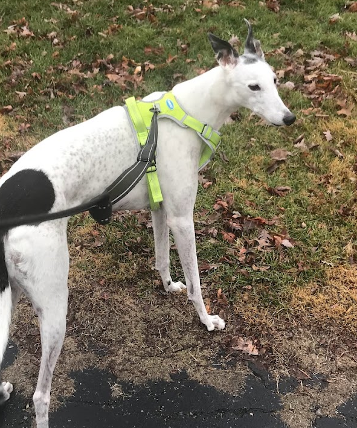
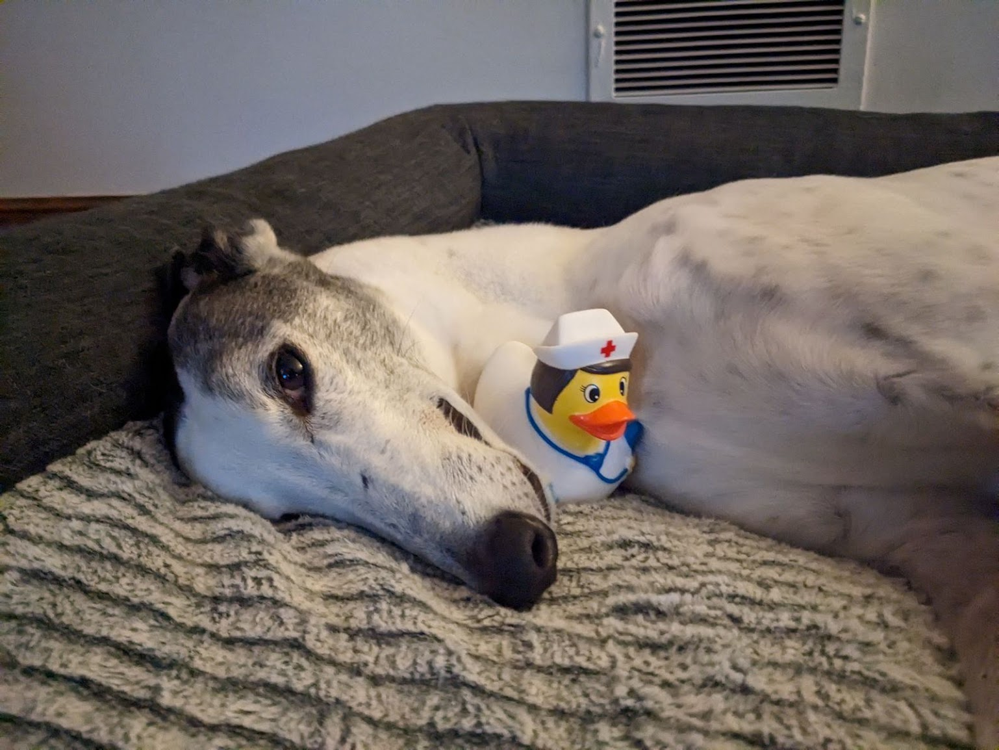

TESTIMONIALS
"We have had an AMAZING experience with our trainer Amy! She has been so patient..reaches out and gives tips throughout the week. I am so impressed on how her coming to the house has made a difference and helped us feel more in control with Pepper. We haven't ever had a puppy so a lot of learning and steps and nothing but knowledge and support. Very happy about our decision to go with training and our awesome trainer Amy!"
Jill Dyckman
"Amy is a talented dog walker and trainer. She has helped us immensely with our young, large breed dog who some days has more energy than I can handle. She is gentle but consistent with him and he responds very well to her on their walks. He also loves her and shows lots of excitement when she comes to the door. Amy is knowledgeable and reliable and I highly recommend her."
Cathy Royster
"Our family has known Amy for 4 years. Our Golden Retriever, Mabel, was very reactive
to other dogs and a challenge to walk when we met Amy.
Amy worked diligently with both Mabel and our family to ensure we are all able to enjoy
our walks now. Mabel is now able to sit and stay when other dogs pass by and heels at
our side.
After having our son, we knew that we needed professional insight to ensure Mabel
could walk safely on a leash next to the stroller. Amy has gone above and beyond for
our family and has been patient with us. She is both passionate and professional. She is
reliable and I trust the well-being of our Mabel when she is in her care.
I highly recommend Amy, she is truly a "dog whisperer"."
Suzanne and Tom Decker
"Amy is absolutely wonderful and her passion for dogs definitely shows in the care she takes for our dog, Sherman. She has been walking him for about a year now and we never have to worry while we are away at work for the day. My husband's job changes frequently and Amy is flexible with our schedule which we greatly appreciate. She is reliable, caring, trustworthy, the list goes on! Highly recommend!"
Kathleen Casey
"Amy is a great dog walker! She is patient and enjoys our staffy Saga, and she's always reliable. We're really glad we found her! "
Hadley & Brett Bachman
"Amy Rorris has been walking my dog Molly for over a year. Molly is always so happy to see Amy. Amy has been such a help with Molly - she is available to walk her when I can't plus she takes her periodically to get a bath. I have found Amy to be extremely dependable and easy to work with. Molly and I are both so glad to have Amy in our lives!!
So 8-9 years later - Molly still is enjoying daily walks with Amy. All the comments I made about Amy still hold all these years later"
Jane VanAuken
"Amy has been walking our golden for 6 years. She is absolutely wonderful. She is reliable and goes above and beyond. Our Mabel adores her. She is truly a dog whisperer.
Suzanne and Tom Decker"
Suzanne Decker
"Amy has been walking our beagle mix for about a year, and we're very happy with the service. She is reliable and willing to be flexible if we need to alter our schedule for a short time. And we have learned a lot of tips and tricks by just talking with her! Highly recommended."
Michael Eberle
"Amy is a talented dog walker and trainer. She has helped me immensely with our young, large breed dog who some days has more energy than I can handle. She is gentle but consistent with him and he responds very well to her on their walks. He also loves her and shows lots of excitement when she comes to the door. Amy is knowledgeable and reliable and I highly recommend her."
Cate R
"Amy has been walking our dog Stan for a year, and we are so grateful for her! When she is with Stan she is caring and communicative, which gives us peace of mind that he will get what he needs while we are at work. She is reliable, organized, and really loves dogs. We are so appreciative of Amy and highly recommend her dog walking services!"
Jeannie LaPlante
"Amy is wonderful and reliable and professional. She is so kind and good with our schnauzer and will always give us plenty of notice when she is unavailable and is flex with last minute changes in schedule."
Michael Sivey
"We love Amy and our dogs love her too! She's always responsive, helpful with training, and punctual. We're lucky to work with her!"
Aleta

"She's wonderfully sweet to our two dogs. She gives us updates and assists with our training. "
Dan

"Amy has been dog walking for us for close to 3 years now. We have 2 Border Collies and a tiny mixed dog. One of the BCs - which she walks alone - can get agressive with other dogs - Amy handles him perfectly. the other 2 are walked together. Nice long walks for all of them. She also baths the dogs at very reasonable prices. In the AM the dogs wait anxiously for Amy to arrive. She is always withing 30-40 min of her usual time. We are very happy with her."
John Kagel
"Amy has been walking our dog Hayden for 3 years. She is reliable, trustworthy, flexible with our scheduling, friendly and great with Hayden. Very happy we found Amy"
Trevor Morse
"Rorris Dog Walking is an excellent service. i utilize the dog walking services 3-5 day a week and have for 14 months. It provides needed exercise for my puppy and comfort for me knowing her needs are being met. Thanks to Rorris Dog Walking, my dog is well behaved!
I definitely recommend this company."
Jon Welty
"I have used Amy for since Dec 2014. She is so reliable and good with my dog. Ruby is my dog's name and she really loves Amy. When Ruby sees Amy's car Ruby gets so excited . Amy is kind with my dog as well. Ruby has a pea injury currently and is unable to walk. Amy stops over to visit her. It makes Ruby's day. You absolutely cannot go wrong if you have Amy walk your dog!"
Dianne Buckio
"Amy has been my dog walker for almost three years now. She is reliable and trustworthy; and my dogs LOVE her! Can't beat her prices, either. I highly recommend her."
Karen Kloman
"I have been using Rorris Dog Walking for about a year and a half. Amy is fantastic with my hounds, and in particular the care she gave to my very geriatric greyhound during his last few months. She's very patient with her canine clients, and super reliable. Very very happy with her!"
Denise Philipsen